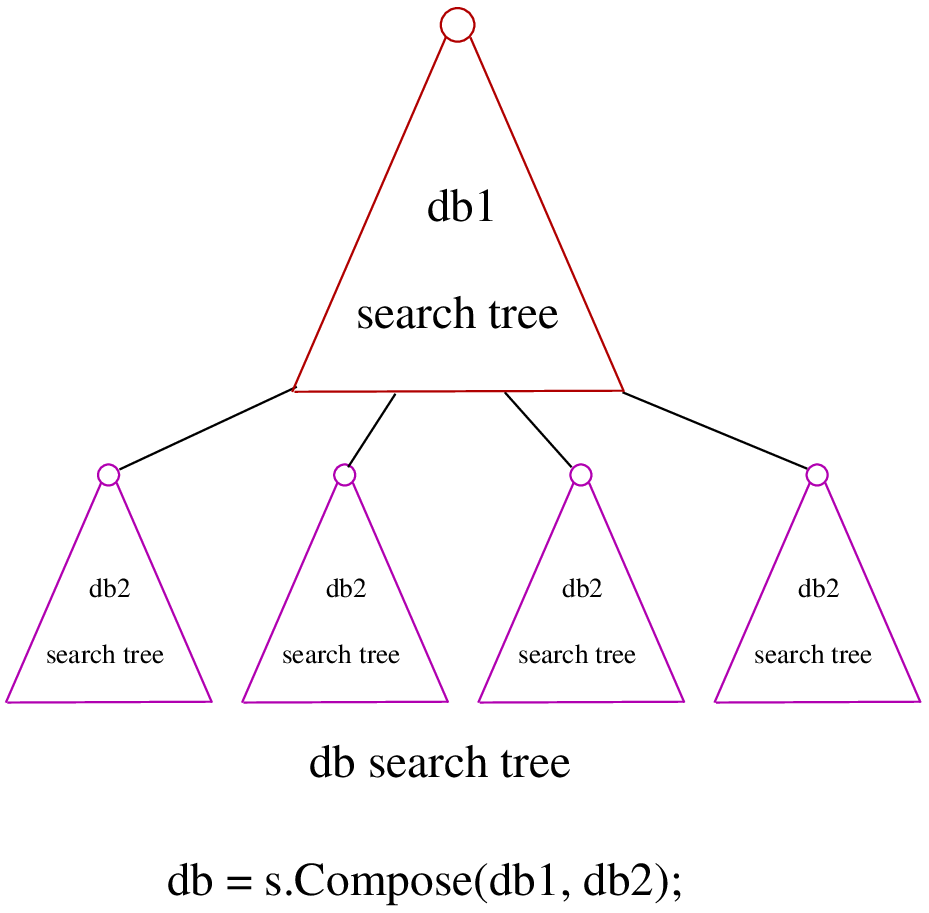
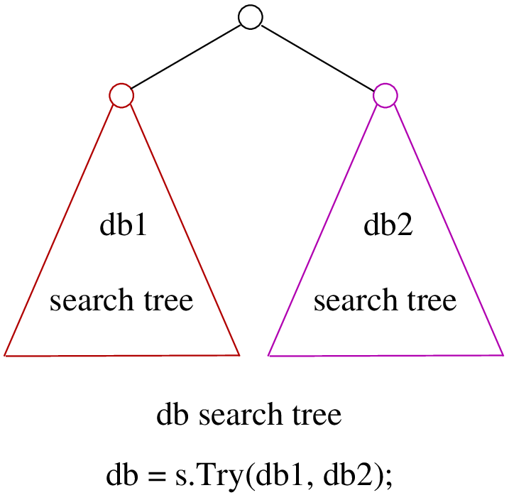
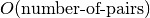
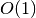

5.5. Basic working of the solver: the phases
A phase corresponds to a type of (sub)search in the search tree[1]. You can have several phases/searches in your quest to find a feasible or optimal solution. In or-tools, a phase is constructed by and corresponds to a DecisionBuilder.
| [1] | Well, sort of. Read on! |
We postpone the discussion on the DecisionBuilders and Decisions for scheduling until the dedicated subsection DecisionBuilders and Decisions for scheduling in the next chapter.
To better understand how phases and DecisionBuilders work, we will implement our own DecisionBuilder and Decision classes in the section Customized search primitives. In this section, we show you how to use these primitives and some very basic examples[2].
5.5.1. DecisionBuilders and phases
DecisionBuilders (combined with SearchMonitors) are responsible of directing the search at the current node in the search tree. The DecisionBuilder class controls the search through its main Next() method:
virtual Decision* Next(Solver* const s) = 0;
It is a pure virtual method, so it must be implemented in all derived DecisionBuilder classes.
To notify the solver that the DecisionBuilder has finished its job at the current node, let Next() return NULL. The solver will then pass the control to the next available DecisionBuilder or stop the search at this node if there are no more DecisionBuilders left to deal with it.
We use DecisionBuilders in two scenarios[3]:
| [3] | One could argue that these two scenarios are not really mutually exclusive. Indeed, we divide the scenarios in two cases depending on whether the DecisionBuilder returns a Decision or not. Some DecisionBuilders delegate the creation process of Decisions to other DecisionBuilders. |
The basic scenario is to divide the search sub-tree in two (preferably non overlapping) search sub-trees. To do so, the DecisionBuilder returns a (pointer to a) Decision through its Next() method.
The Decision class tells the solver what to do on the left branch (through its Apply() method) and the right branch (through its Refute() method).
Some available DecisionBuilders that divide the search sub-tree in two are:
BaseAssignVariables: the main DecisionBuilder for IntVars. It’s the basic DecisionBuilder used for assigning values to IntVar variables. When you invoke:
DecisionBuilder * const db = MakePhase(vars, Solver::CHOOSE_FIRST_UNBOUND, Solver::ASSIGN_MIN_VALUE);
the returned (pointer to a) DecisionBuilder object is a (pointer to a) BaseAssignVariables object. See the subsection The MakePhase() method more in details below.
AssignVariablesFromAssignment: assigns values to variables from an Assignment and if needed passes the hand to another DecisionBuilder to continue the search. The factory method to create this DecisionBuilder is MakeDecisionBuilderFromAssignment().
...
A DecisionBuilder doesn’t have to split the search sub-tree in two: it can collect data about the search, modify the model, etc. It also can solve the sub-tree with the help of other DecisionBuilders and allow for nested searches.
In this case, take the appropriate action in the Next() method and return NULL to notify the solver that the DecisionBuilder has finished its work at the current node.
Some examples of available DecisionBuilders that do some stuff at a node without splitting the search sub-tree in two:
- StoreAssignment and RestoreAssignment: respectively store and restore Assignments during the search.
- AddConstraintDecisionBuilder: adds a Constraint during the search.
- ApplyBranchSelector: changes the way the branches are selected. For instance, the left branch can become the right branch and vice-versa. Have a look at the Solver::DecisionModification enum for more.
- LocalSearch: applies local search operators to find a solution.
- SolveOnce: stops the search as soon as it finds a solution with the help of another DecisionBuilder.
- NestedOptimize: optimizes the search sub-tree with the help of another DecisionBuilder.
- ...
For your (and our) convenience, three more methods can be implemented:
- virtual void AppendMonitors(Solver* const solver, std::vector<SearchMonitor*>* const extras): to add some extra SearchMonitors at the beginning of the search. Please note there are no checks at this point for duplication.
- virtual string DebugString() const: the usual DebugString() method to give a name to your object.
- virtual void Accept(ModelVisitor* const visitor) const: the usual Accept() method to let you visit the model and take appropriate actions.
5.5.2. Decisions and DecisionVisitors
The Decision class together with the DecisionBuilder class implement the branching rules of the search, i.e. how to branch (or divide the search sub-tree) at a given node in the search tree. Although a DecisionBuilder could return several types of Decisions during a search, we recommend to stick to one Decision for a DecisionBuilder per phase.
DecisionVisitors is a class whose methods are triggered just before a Decision is applied. Your are notified of the concrete decision that will be applied and are thus able to take action.
5.5.2.1. Decisions
The Decision class is responsible to tell the solver what to do on left branches through its Apply() method:
virtual void Apply(Solver* const s) = 0;
and the right branch through its Refute() method:
virtual void Refute(Solver* const s) = 0;
These two pure virtual methods must be implemented in every Decision class.
A Decision object is returned by a DecisionBuilder through its Next() method.
Two more methods can be implemented:
- virtual string DebugString() const: the usual DebugString() method.
- virtual void Accept(DecisionVisitor* const visitor) const: accepts the given visitor.
Several Decision classes are available. We enumerate the different strategies implemented by the available Decision classes dealing with IntVars in the next section. In the next subsection, we detail a basic example.
5.5.2.2. AssignOneVariableValue as an example
An obvious choice for a Decision class for IntVars is probably AssignOneVariableValue. This class assigns a value to a variable in the left branch and forbids this assignment in the right branch.
The constructor takes the variable to branch on and the value to assign to it:
AssignOneVariableValue(IntVar* const v, int64 val)
: var_(v), value_(val) {
}
var_ and value_ are local private copies of the variable and the value.
The Apply() and Refute() methods are straithforward:
void Apply(Solver* const s) {
var_->SetValue(value_);
}
void Refute(Solver* const s) {
var_->RemoveValue(value_);
}
5.5.2.3. DecisionVisitors
DecisionVisitors are attached to Decisions. The corresponding methods of the DecisionVisitor are triggered just before a Decision is applied[4].
| [4] | In this case, the methods are triggered when Decision objects are created and these objects are created just before their Apply() method is called. See the subsection Visitors for more. |
When dealing with IntVars, two possibilities can be audited:
when a variable will be assigned a value, implement the
virtual void VisitSetVariableValue(IntVar* const var, int64 value);
method.
when a variable domain will be splitted in two by a given value, implement the
virtual void VisitSplitVariableDomain(IntVar* const var, int64 value, bool start_with_lower_half);
method. If start_with_lower_half is true, the decision to be applied is
otherwise it is
There is also a default option:
virtual void VisitUnknownDecision();
In the section Breaking symmetries with SymmetryBreakers, we present a concept that uses DecisionVisitors.
5.5.3. Combining DecisionBuilders
We propose two ways to combine DecisionBuilders:
- Compose(): combine sequential searches, i.e. DecisionBuilders are used one after the other;
- Try(): combine parallel searches, i.e. DecisionBuilders are used in parallel.
You can of course combine the two.
5.5.3.1. Compose()
Creates a DecisionBuilder which sequentially composes DecisionBuilders.
Solver s(...);
...
DecisionBuilder * const db1 = ...;
DecisionBuilder * const db2 = ...;
DecisionBuilder * const db = s.Compose(db1, db2);
At each leaf of the search tree corresponding to the DecisionBuilder db1, the second DecisionBuilder db2 is called.
The DecisionBuilder db search tree will be as follows:
This composition of DecisionBuilders frequently happens in scheduling. For instance, in the section The DecisionBuilders where we try to solve a Job-Shop Problem, the solving process is done in two consecutive phases: first we rank the tasks for each machine, then we schedule each task at its earliest start time. To do so, we Compose() two DecisionBuilders.
You can Compose() more than two DecisionBuilders. There are two more specific methods to Compose() three and even four DecisionBuilders. And if that is not enough, use
DecisionBuilder* Compose(const std::vector<DecisionBuilder*>& dbs);
where you can Compose() as many DecisionBuilders as you like!
5.5.3.2. Try()
Creates a DecisionBuilder which tries DecisionBuilders in parallel.
Solver s(...);
...
DecisionBuilder * const db1 = ...;
DecisionBuilder * const db2 = ...;
DecisionBuilder * const db = s.Try(db1, db2);
The DecisionBuilder db1 and the DecisionBuilder db2 are each called from the top of the search tree one after the other.
The DecisionBuilder db search tree will be as follows:
This combination is handy to try a DecisionBuilder db1 which partially explores the search space. If it fails, you can use the DecisionBuilder db2 as a backup.
As with Compose(), you can Try() up to four DecisionBuilders and use
DecisionBuilder* Try(const std::vector<DecisionBuilder*>& dbs);
for more.
Warning
Beware that Try(db1, db2, db3, db4) will give an unbalanced tree to the right, whereas Try(Try(db1, db2), Try(db3, db4)) will give a balanced tree.
5.5.4. Nested searches
Nested searches are searches in sub-trees that are initiated from a particular node in the global search tree. Another way of looking at things is to say that nested searches collapse a search tree described by one or more DecisionBuilders and sets of SearchMonitors and wrap it into a single node in the main search tree.
Local search (LocalSearch) is implemented as a nested search but we delay its description until the next chapter.
5.5.4.1. SolveOnce
SolveOnce is a DecisionBuilder that searches a sub-tree with a given DecisionBuilder and a set of SearchMonitors and returns the first solution encountered. If there are no solutions in this nested sub-tree, then SolveOnce will fail.
The factory method is MakeSolveOnce(). You have to invoke it with another DecisionBuilder. You can add none or up to four SearchMonitors and if you want to use more than four SearchMonitors, use
DecisionBuilder* MakeSolveOnce(DecisionBuilder* const db,
const std::vector<SearchMonitor*>& monitors);
5.5.4.2. NestedOptimize
NestedOptimize is similar to SolveOnce except that it seeks for an optimal solution instead of just a feasible solution. If there are no solutions in this nested tree, it fails.
The factory method is MakeNestedOptimize(). Again, you can use none or up to four SearchMonitors and use the version with an std::vector<SearchMonitor*>:
DecisionBuilder* MakeNestedOptimize(DecisionBuilder* const db,
Assignment* const solution,
bool maximize,
int64 step,
const std::vector<SearchMonitor*>& monitors);
NestedOptimize is used for:
- Testing.
- Local search: see next chapter.
- To control the backtracking.
- ...
5.5.5. The MakePhase() method more in details
We only discuss the MakePhase() methods for std::vector<IntVar*>. For std::vector<IntervalVar*> and std::vector<SequenceVar*>, see the section Scheduling in or-tools in the next chapter.
The MakePhase() method is overloaded with different arguments and we discuss most of them in this subsection.
5.5.5.1. The 2-steps approach
Variables and values are chosen in two steps: first a variable is chosen and only then is a value chosen to be assigned to this variable.
The basic version of the MakePhase() method is:
DecisionBuilder* MakePhase(const std::vector<IntVar*>& vars,
IntVarStrategy var_str,
IntValueStrategy val_str);
where IntVarStrategy is an enum with different strategies to find the next variable to branch on and IntValueStrategy is an enum with different strategies to find the next value to assign to this variable. We detail the different available strategies in the next section.
5.5.5.2. Callbacks to the rescue
What if you want to use your own strategies? One way to do this is to develop your own Decisions and DecisionBuilders. Another way is to provide callbacks to the MakePhase() method. These callbacks evaluate different variables and values you can assign to a chosen variable. The best choice is each time the one that minimizes the values returned (through the Run() method) by the callbacks.
We will explore both ways in the section Customized search primitives.
There are two types of callbacks[5] accepted by MakePhase():
typedef ResultCallback1<int64, int64> IndexEvaluator1;
typedef ResultCallback2<int64, int64, int64> IndexEvaluator2;
| [5] | If you want to know more about callbacks, see the section Callbacks in the chapter Under the hood. |
IndexEvaluator1 allows to evaluate the next variable to branch on by giving the index of this variable in the std::vector<IntVar*> for unbounded variables. IndexEvaluator2 allows to evaluate the available values (second index) for the chosen variable (first index). In each case, the variable and the value chosen will correspond to the smallest value returned by the evaluators. In case of a tie for the values, the last value with the minimum score will be chosen. You can also provide an IndexEvaluator1 to break the tie between several values. Last but not least, you can combine callbacks with the available IntVarStrategy or IntValueStrategy strategies.
Warning
Ownership of the callbacks is always passed to the DecisionBuilder.
We detail some combinations:
DecisionBuilder* MakePhase(const std::vector<IntVar*>& vars,
IndexEvaluator1* var_evaluator,
IndexEvaluator2* val_eval);
You provide both evaluators.
DecisionBuilder* MakePhase(const std::vector<IntVar*>& vars,
IntVarStrategy var_str,
IndexEvaluator2* val_eval,
IndexEvaluator1* tie_breaker);
You use a predefined IntVarStrategy strategy to find the next variable to branch on, provide your own callback IndexEvaluator2 to find the next value to give to this variable and an evaluator IndexEvaluator1 to break any tie between different values.
DecisionBuilder* MakePhase(const std::vector<IntVar*>& vars,
IndexEvaluator1* var_evaluator,
IntValueStrategy val_str);
This time, you provide an evaluator IndexEvaluator1 to find the next variable but rely on a predefined IntValueStrategy strategy to find the next value.
Several other combinations are provided.
5.5.5.3. When the 2-steps approach isn’t enough
Sometimes this 2-step approach isn’t satisfactory. You may want to test all combinations of variables/values. We provide two versions of the MakePhase() method just to do that:
DecisionBuilder* MakePhase(const std::vector<IntVar*>& vars,
IndexEvaluator2* evaluator,
EvaluatorStrategy str);
and
DecisionBuilder* MakePhase(const std::vector<IntVar*>& vars,
IndexEvaluator2* evaluator,
IndexEvaluator1* tie_breaker,
EvaluatorStrategy str);
You might wonder what the EvaluatorStrategy strategy is. The selection is done by scanning every pair <variable, possible value>. The next selected pair is the best among all possibilities, i.e. the pair with the smallest evaluation given by the IndexEvaluator2. This approach is costly and therefore we offer two options given by the EvaluatorStrategy enum:
- CHOOSE_STATIC_GLOBAL_BEST: Static evaluation: Pairs are compared at the first call of the selector, and results are cached. Next calls to the selector use the previous computation, and are thus not up-to-date, e.g. some <variable, value> pairs may not be possible due to propagation since the first call.
- CHOOSE_DYNAMIC_GLOBAL_BEST: Dynamic evaluation: Pairs are compared each time a variable is selected. That way all pairs are relevant and evaluation is accurate. This strategy runs in  at each variable selection, versus  in the static version.
Google or-tools |
User's Manual
Google search
Welcome
Tutorial examples
Current chapter
5. Defining search primitives: the n-Queens Problem
Previous section
5.4. cpviz: how to visualize the search
Next section
5.6. Out of the box variables and values selection primitives